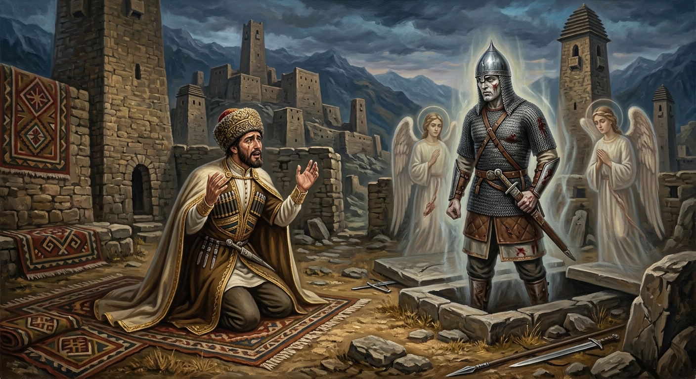

И.А. Дахкильгов. Хьехаме дувцарш - поучительные рассказы-притчи.
И.А. Дахкильгов. Хьехаме дувцарш - поучительные рассказы-притчи. Из ингушского фольклора.

Дауд-пайхамарах хьаьрча къа
Дауд хиннав пайхамар а паччахь а волаш. Дукха истий ший боллашехьа а цхьан эздечун дала теха Ӏалаьмате хоза хинна сесаг дагайоаллаш хиннав из. Хоза из кхалсаг шийна хьаерзаяр духьа эзде мишта дӀавоаккхаргва ца ховш, Дауд сагота хьувзача хана, тӀом хьайр. Из эзде тӀом эггар лирагӀа болча хехка ваьлар Дауд. ТӀеххьара вийр из эзде. Цхьа ха яьннача гӀолла жералла яьнна цун сесаг Дауда шийна дӀайигар. Бакъда, хӀарача бусса из эзде гӀанахьа духьала аха ваьлар цунна, ше верахи Дауда зудал совдаларахи бехкаш доахаш, наӀалташ кхайкхадора цо. Сатем байнача Дауда лаьрхӀар из вийна эзде шийна къинтӀера ваккха. Кашамашка ер хьалвахача, малейкий новкъосталца цхьан юкъа дийнвир из саг. Дауда аьлар цунга: - Хьа сесаг сайна хьаерзаяр духьа хьо тӀем тӀа хехкаш, хьо хӀалак хилийтав аз. Сона къинтӀера валар дех аз хьога. - Дукхача хӀаманна къинтӀера вала йиш йолаш ва саг, - аьннад цу эздечо, - бакъда дега цхьаккха дарах могаргдац тийшача балхах къинтӀера дала. Из аьнна воаллашехьа а саг каша дӀавижар, боарз къовлабелар. Из доккха къа тӀерадаланзар Дауда тӀера.
РУССКИЙ
Грех пророка Дауда
Пророк и царь Дауд имел много жен. Тем не менее он стал заглядываться на невиданной красоты жену одного из своих воинов. Дауд не знал, как его извести, чтобы жениться на той красавице. В это время началась война, и Дауд отправил воевать мужа той красавицы, причем послал его в самую гущу сражений. Наконец, тот погиб. Через какое-то время Дауд женился на красавице-вдове, но каждую ночь во сне ему стал являться погибший воин, укорявший и проклинавший Дауда в беспутстве и в том, что он загубил его, безвинного человека. Жизнь Дауда стала невыносимой, и он решил сходить на могилу того воина и попросить прощения. На кладбище пророку помогли ангелы. Они оживили покойника. Дауд ему сказал: - Я тебя отправил на войну, чтобы ты погиб, а твоя жена досталась мне. Прости мне этот грех. - Многое может человек простить, - ответил оживший покойник, - но его сердце и душа никогда не смогут простить подлости и предательства. Покойник вновь лег в могилу. Так и остался на Дауде этот непрощенный грех.
ENGLISH
The sin of the prophet Daud
The prophet and king David had many wives. Nevertheless, he found himself drawn to the wife of one of his warriors, a woman of unparalleled beauty. David did not know how to get rid of her husband so that he could marry that beauty. At that time, a war broke out, and David sent the man's husband off to fight, sending him right into the thick of the battle. Eventually, the man was killed. Some time later, David married the beautiful widow, but every night the fallen warrior would appear to him in his dreams, reproaching and cursing David for his debauchery and for having brought about the death of an innocent man. Daoud's life became unbearable, and he decided to visit the warrior's grave and ask for forgiveness. At the cemetery, the angels came to the prophet's aid. They brought the dead man back to life. Daoud said to him: 'I sent you off to war so that you might die, and your wife would fall to me. Forgive me for this sin.' 'A man can forgive many things,' replied the revived dead man, 'but his heart and soul can never forgive meanness and betrayal.' The dead man lay down in his grave once more. And so this unforgiven sin remained upon Daoud.
НОХЧИЙН
Дауд-пайхамаран къа
Дауд-пайхамар, паччахь а вара, дукха зударш болуш хилла. Циггал а совнаха, иза шен тӀемалойх цхьаннан зудчух, дуккха хазаллах хилларчух, хьаьжна дела. Дауд, хӀун дан беза ца хаьара, хӀара хаза зуда шена яла, хӀуну дан деза. ХӀокху хена тӀом долайелла, Дауда цу зудчун мар тӀом бан вигна, тӀома массарел дукхагӀара меттиге а вигна. ТӀаьхьа, из вийна. Хан яьллачул тӀаьхьа, Дауда зуда-жеро йохийна, амма буьйсанна цунна гӀа гуш хилла, вийна тӀемало, велха, наӀалт а олуш, Даудна бехк а бешар: харц лелаш, хьалхе ша, бехк боцу стаг, вийна аьлла. Дауден дахар балане ду делла, из кашка дӀаваха ойла йина, вийначу тӀемалон гечдар деха. Кашамашка пайхамарна маликаша гӀо дина. Уьш селлара веллачун садоуьйтура. Дауда цунга аьлла: - Ас хьо тӀом тӀе вигна, хьо вала лаьара, хьан зуда сона яла. Гечде и сан къа. - Дукхал хӀуманаш дегачо мега стагана, - жоп делла селлара самаваьллачо, - амма цуьнан дог а сина цкъа а гечдийр дац ямартал а харцонах верзар а. Веллачо юха а каша чу лаьцна вижина. Иштта Даудна тӀехь дисна и гечдина доцу къа.
ПОГОВОРКИ
Буо дега ийша хул. Сиротское сердце ущемленное. An orphan's heart is a wounded one. Бо деган эшна хуьлу.Воша воаца йиша гӀийла яьгӀай. Печальна участь девушки, не имеющей брата. Sorrowful is the fate of a girl who has no brother. Ваша воцу йоӀ гӀийла йаьхна.Дехкеваргвола дош ма ала, дехкеваргвола хӀама ма де. Не говори того, о чем пожалеешь; не делай того, о чем тоже пожалеешь. Don't say what you'll regret; don't do what you'll regret. Дохкоерволу дош ма ала, дохковерволу хӀума а ма де.Дог Ӏаьржа сага юхь Ӏаьржлойла, гаьннара из воззаргволаш. Пусть лицо почернеет у того, кто таит черные мысли, - чтобы его можно было узнать еще издали. May the face of one who harbours black thoughts turn black too, so he can be recognised from afar. Дог Ӏаьржа стеган йуьхь Ӏаржалойла, геннара иза вевзарволуш.Дош дешо юхадерзо, пхо берзац юха. Сказанное (нехорошее) слово можно вернуть (одолеть) словом, но вылетевшую пулю вернуть невозможно. A harsh word can be undone with another word, but a fired bullet can never be called back. Дош дашо йухадерзадо, пха берзац йуха.Дуненна хеза цӀи йицлургъяц. Имя, ставшее известным всему миру, не забудется. A name that has become known to the whole world will never be forgotten. Дуьненна хезна цӀе йицлур йац.Зуд-саг шин бӀаргах вовзаргва. По глазам узнается похотливый человек. A lustful man can be recognised by his eyes. Зуд-стаг шен бӀаьргах вевзар ву.Ираз а доакъазал а цхьатарра ахчах доал. С деньгами связаны как счастье, так и несчастье. Both fortune and misfortune are equally bound up with money. Ирс а дакъазалла а цхьатерра ахчах доллу.Къахьа дале а, бакъдар тол. Пусть и горькая, но правда все же лучше. Though bitter, the truth is still better. Къаьхьа далахь а, бакъдерг тоьлу.Къонах дезал Ӏалашбе гӀерташ ара лел, сесаг цӀагӀа шийна тӀехьа дезал боаккхаш ягӀа. Пока мужчина где-то ходит, чтобы обеспечить семью, жена дома детей к себе приваживает. While the man is out providing for the family, the wife draws the children close to her at home. Къонах доьзал Ӏалашбан гӀерташ арахь лела, зуда цӀахь шен тӀаьхьа доьзал боккхуш йеха.Хиннар хиннад, дӀадаьнар дӀадаьннад. Что было, то было; что прошло, то прошло. What was, was; what has passed, has passed. Хилларг хилла ду, дӀадаьлларг дӀадаьлла ду.ХӀарача баьцах дарба а дохьаж а доал, хӀарача сагах, мелла дале а, дика а доал, во а доал. Каждая травинка заключает в себе и лекарство, и отраву: каждый человек – и хорошее, и плохое. Every blade of grass holds both medicine and poison; every person holds both good and bad. ХӀора бецах дарба а дӀовш а доллу, хӀора стагах, мелла далахь а, дика а доллу, вон а доллу.Цаховш даьнна а гӀалат ца доалаш саг хиннавац. Нет человека, который, хотя бы случайно, не ошибался. There is no man who has never made a mistake, even by accident. Цахууш даьлла а гӀалат ца долуш стаг хилла вац.Ше харца волча хӀаманна саг кӀала отта веза. Человек сам обязан держать ответ за свои ошибки. A man must answer for his own mistakes. Ша харца волчу хӀуманна стаг кӀел хӀотта веза.